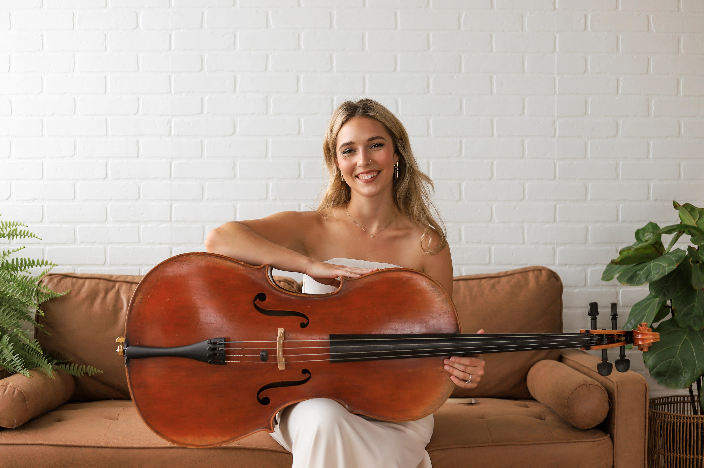
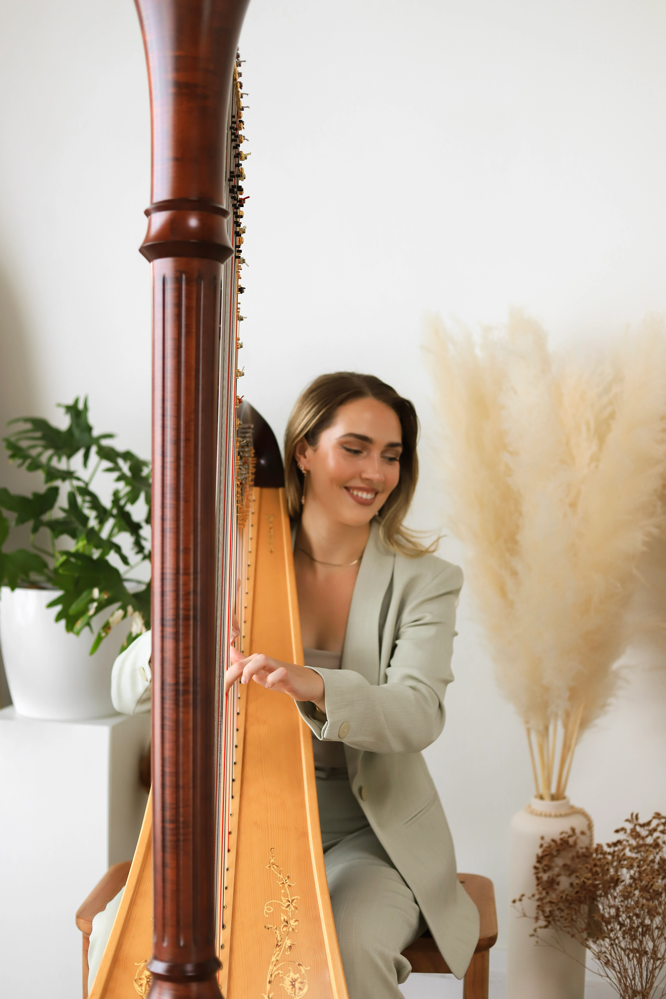
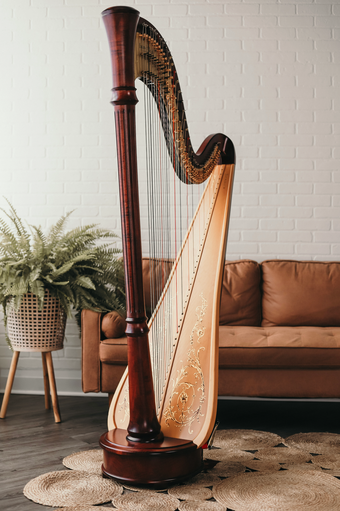
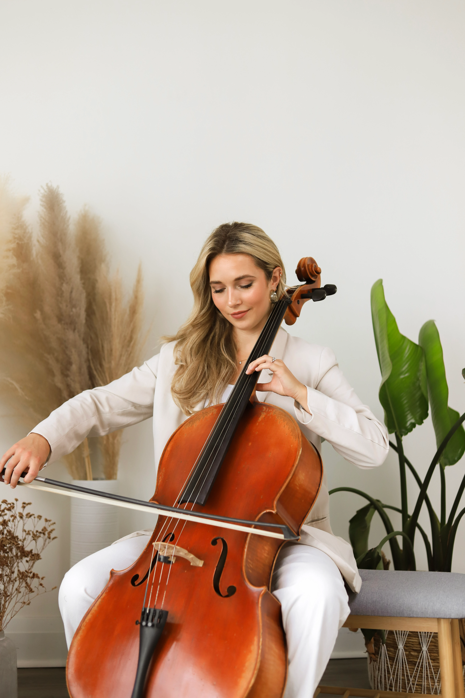
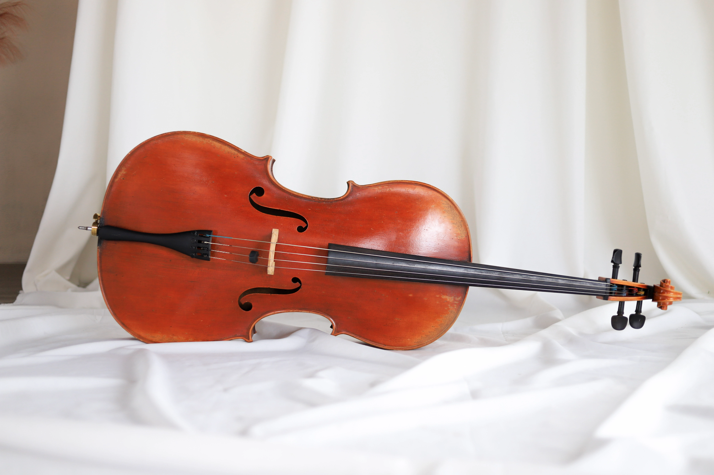

Meet The Duo
Heather & Naomi
Identical twins and classically trained musicians, Naomi and Heather bring together two distinct instruments and a shared musical instinct. Naomi found her voice on the harp, while Heather gravitated to the cello. Together as The StringSisters, they perform throughout Toronto, the GTA, and across Ontario, bringing an elegant, intimate sound to weddings, celebrations, and special events.



The Harpist
Naomi
Naomi trained classically at the Royal Conservatory of Music, where she was awarded the Gold Medal twice over — a distinction earned by very few players in the program's history. That foundation now stretches far wider: Celtic and folk melodies, pop arrangements, film scores and jazz standards all move through her playing with equal ease.
Beyond performing, Naomi teaches tailored harp lessons for students at every stage, from a first pluck to advanced repertoire.
- RCM Gold Medalist ×2
- Teaches Harp


The Cellist
Heather
Heather has spent more than a decade with the cello, most at home where classical technique meets the language of film scoring. Her playing has reached rooms far beyond the concert hall — including a live performance alongside KYGO at VELD Music Festival in 2019 — and appears across recordings and orchestral sessions throughout the city.
She also teaches cello to students of all ages, building technique alongside a genuine ear for phrasing.
- 10+ Years Experience
- KYGO @ VELD 2019
- Teaches All Ages
Frequently Asked Questions
Weddings, corporate events, private celebrations and milestone occasions of every kind — from ceremony and cocktail hour music to full evening receptions.
Yes. We include two special song requests with every booking, and can arrange further pieces from our repertoire or a preferred genre on request.
Most bookings are harp and cello together, since that's the sound The StringSisters are built around. Naomi and Heather are also each available individually, depending on your event.
We're based in Toronto and perform throughout the GTA, including Newmarket, Bradford and venues such as The Arlington Estate.